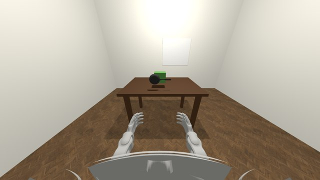
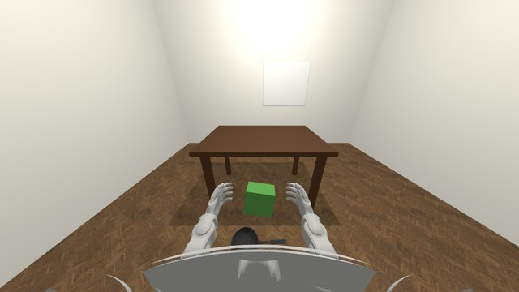

Freeze-and-predict
Observe → Decide → Execute
One real episode. A chain reaction launches a cast-iron pan (the green block); the brain is GPT-5.5.
01
Observe · 0.6 s, then time freezes



Egocentric view, t0 to t0+0.6 s, before the outcome is visually resolved. Then time freezes.
02
Decide · a motor plan, not a menu
{
"intent": "Step backward away from the
falling objects while bringing both
hands forward and low…",
"confidence": 0.88,
"walking_cmd": [-0.7, 0.0, 0.0],
"keyframes": [
{"t": 0.0, "left_hand": [0.10, 0.15, 0.00],
"right_hand": [0.10,-0.15, 0.00]},
{"t": 0.4, "left_hand": [0.50, 0.12,-0.25],
"right_hand": [0.50,-0.12,-0.25]},
{"t": 1.0, "left_hand": [0.40, 0.12,-0.20],
"right_hand": [0.40,-0.12,-0.20]}
]
}
A fixed rule reads the plan as TRIGGER_DODGE · ground truth DODGE · safe
03
Execute · Unitree G1 in the same scene
A pre-trained whole-body controller turns the plan into torques. The pan lands; the humanoid is clear.